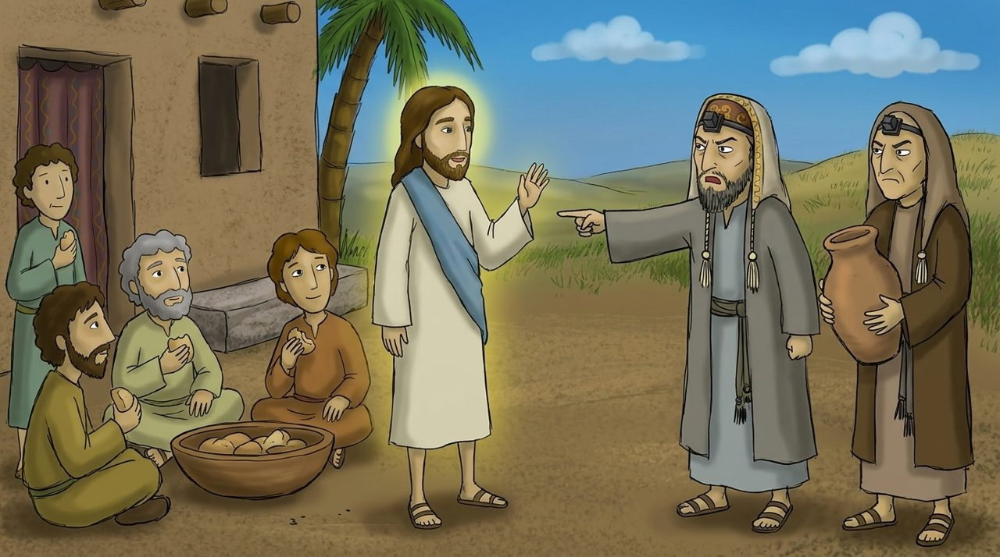

1 · Matthew 15:1–9
The tradition of the elders
The Pharisees' hand washing was not about hygiene, but a religious purification ritual. It was the that extended a rule meant only for priests in the Law to everyone.
Jesus asks a counter-question: isn't the tradition of swearing “Corban” (dedicated to God) to avoid honoring parents canceling God's commandment? Then He quotes Isaiah 29:13: “These people honor me with their lips, but their is far from me.”
Looking deeper · Is tradition bad?
Tradition itself can be good. The problem arises when human tradition is placed above God's commandment. Church culture must face the same question: does this tradition bring me closer to God, or does it hide God?